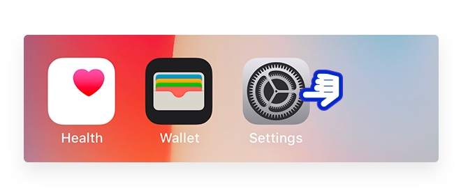
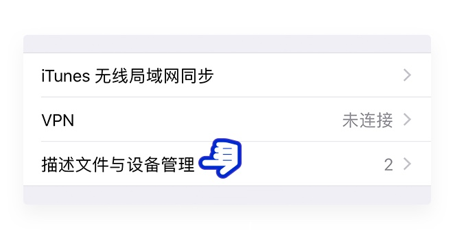
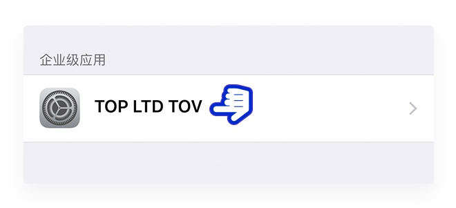

After scanning the QR code with WeChat, open the page in your mobile browser. Accessing the page with browers such as Chrome, UC, or Safari, allows you to download the wallet iOS.
Setup Guide

1

2
Next, click on “ Settings ” to enter the settings panel.

3
In the settings panel, select the “ General ” tab.

4
Select the “ Profiles & Device Management ” tab.

5
Tap into the Developer Profile.

6
Tap “ Trust 'Up Wallet' ”.